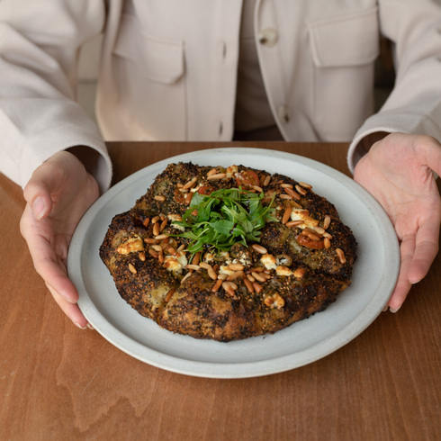
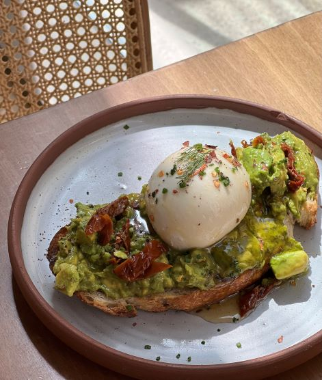

welcome to Rusk Artisanal Bakery
Rusk Artisanal Bakery
Bakery & Cafe in Doha
4.6 · 3,054 Google reviewsFind Us
Bakery & Cafe
Msheireb Downtown, Doha, Qatar
Gallery





Bakery & Cafe in Doha
4.6 · 3,054 Google reviewsMsheireb Downtown, Doha, Qatar

